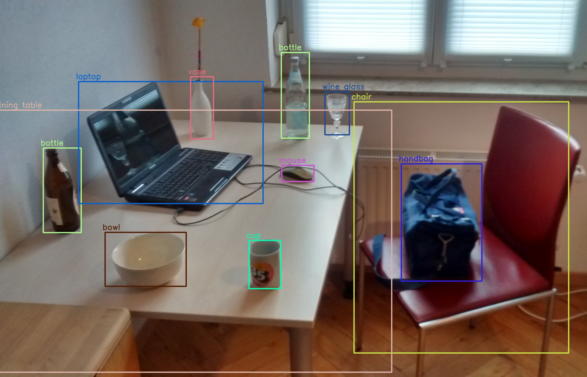

Discriminative Data Analytics
we proposed a novel discriminative multi-view learning algorithm,
namely Non-negative Discriminative Analysis (DNA), to extract the
unique information of one dataset (a.k.a. view) with respect to the
other dataset. This boils down to solving a non-negative matrix
factorization problem. Furthermore, we apply the proposed DNA framework
various real-world down-stream machine learning applications such as
feature selections, dimensionality reduction, classification, and
clustering.
Feature Selection using Discriminative Analysis

Feature selection is a dimensionality reduction technique
that can choose small set of features, eliminating
unnecessary ones, for better learning performance.
Researchers from different machine learning (ML)
application areas, published various feature selection
algorithms and their effectiveness in real-world datasets. In
this paper, we utilized the discriminative analysis method
for feature selection and tested its efficacy in unsupervised and supervised
learning environment.
Data Exploration, Visualization, Cleaning and Correlation

Cleaned COVID-19 dataset and performed queries to retrieve desired information. Visualized increase and decrease in death rate from March 2020 to Jan 2022.
Extracted correlation among features.
Twitter Sentiment Analysis using RoBERTa using AWS server

Collected data from Twitter using twitter API via Postman on “remote job” from Jan 2020 to Dec 2021. Using the RoBerta pretrained model, demonstrated that 74.8% of tweets are in favor of remote jobs
End to end object recognition project using YOLOR

Created a dataset of 5220 images of 10 specific street signs in McAllen city with annotations. Trained models using YOLOR and Scaled-YOLO-v4 object detection systems and tested in 10% of the dataset and compared among built models
Achieved 90.1% improvement in FPS for YOLOR compared to Scaled-YOLO-v4 with similar detection accuracy.